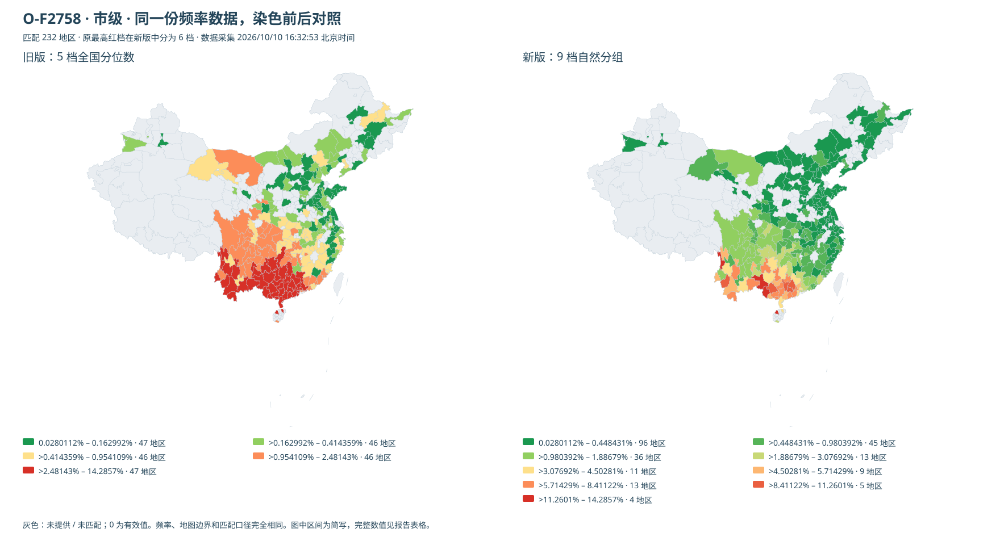
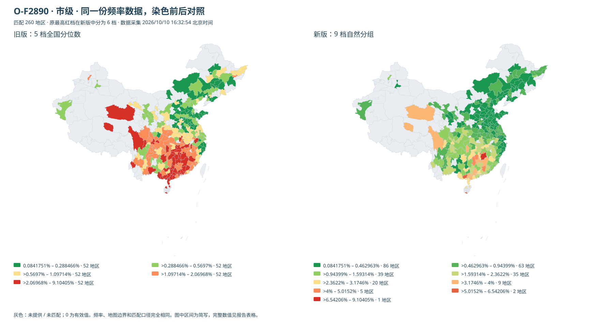

市县地图染色：绿 → 黄 → 红
同一份全国数据对比 5 档分位数与最多 9 档自然分组。颜色表示本支系内相对高低，跨支系请比较频率数值。保留原始值、重复观测权重及极端值；全国阈值不随籍贯筛选变化。
O-F2758 · 县级
旧最高红档 7.14286%–100% 在新版分为 7 档；分档耗时中位数 0.59 ms。

下载 SVG 对照图 · 打开交互预览
查看完整区间及地区数
旧版
| 档位 | 原始频率区间（百分数） | 地区数 |
|---|
| 1 | [0.10869565, 0.85372964]% | 153 |
| 2 | (0.85372964, 1.6666668]% | 154 |
| 3 | (1.6666668, 3.3333334999999997]% | 153 |
| 4 | (3.3333334999999997, 7.1428575]% | 154 |
| 5 | (7.1428575, 100]% | 150 |
新版
| 档位 | 原始频率区间（百分数） | 地区数 |
|---|
| 1 | [0.10869565, 2.3255814]% | 381 |
| 2 | (2.3255814, 5.309734499999999]% | 172 |
| 3 | (5.309734499999999, 9.2307694]% | 114 |
| 4 | (9.2307694, 14.285715]% | 52 |
| 5 | (14.285715, 20]% | 23 |
| 6 | (20, 28.57143]% | 13 |
| 7 | (28.57143, 40]% | 6 |
| 8 | (40, 50]% | 2 |
| 9 | (50, 100]% | 1 |
来源：23魔方公开地域汇总 · 2026/10/10 16:32:53 北京时间 · 未匹配 1 条
O-F2758 · 市级
旧最高红档 2.48143%–14.2857% 在新版分为 6 档；分档耗时中位数 0.15 ms。

下载 SVG 对照图 · 打开交互预览
查看完整区间及地区数
旧版
| 档位 | 原始频率区间（百分数） | 地区数 |
|---|
| 1 | [0.028011205999999997, 0.162991954]% | 47 |
| 2 | (0.162991954, 0.4143593620000002]% | 46 |
| 3 | (0.4143593620000002, 0.9541091799999999]% | 46 |
| 4 | (0.9541091799999999, 2.4814266200000015]% | 46 |
| 5 | (2.4814266200000015, 14.285715]% | 47 |
新版
| 档位 | 原始频率区间（百分数） | 地区数 |
|---|
| 1 | [0.028011205999999997, 0.4484305]% | 96 |
| 2 | (0.4484305, 0.9803921999999999]% | 45 |
| 3 | (0.9803921999999999, 1.8867925]% | 36 |
| 4 | (1.8867925, 3.0769230000000003]% | 13 |
| 5 | (3.0769230000000003, 4.5028143]% | 11 |
| 6 | (4.5028143, 5.7142857]% | 9 |
| 7 | (5.7142857, 8.411215]% | 13 |
| 8 | (8.411215, 11.2600535]% | 5 |
| 9 | (11.2600535, 14.285715]% | 4 |
来源：23魔方公开地域汇总 · 2026/10/10 16:32:53 北京时间 · 未匹配 3 条
O-F2890 · 县级
旧最高红档 4%–100% 在新版分为 7 档；分档耗时中位数 0.66 ms。

下载 SVG 对照图 · 打开交互预览
查看完整区间及地区数
旧版
| 档位 | 原始频率区间（百分数） | 地区数 |
|---|
| 1 | [0.13071896, 0.78125]% | 194 |
| 2 | (0.78125, 1.4211286600000002]% | 191 |
| 3 | (1.4211286600000002, 2.2404830000000002]% | 193 |
| 4 | (2.2404830000000002, 4]% | 193 |
| 5 | (4, 100]% | 192 |
新版
| 档位 | 原始频率区间（百分数） | 地区数 |
|---|
| 1 | [0.13071896, 1.4285714]% | 389 |
| 2 | (1.4285714, 2.8846154]% | 290 |
| 3 | (2.8846154, 4.7619050000000005]% | 133 |
| 4 | (4.7619050000000005, 7.1428575]% | 81 |
| 5 | (7.1428575, 10.526316]% | 34 |
| 6 | (10.526316, 15.384616000000001]% | 19 |
| 7 | (15.384616000000001, 22.5]% | 11 |
| 8 | (22.5, 33.333334]% | 5 |
| 9 | (33.333334, 100]% | 1 |
来源：23魔方公开地域汇总 · 2026/10/10 16:32:54 北京时间 · 未匹配 2 条
O-F2890 · 市级
旧最高红档 2.06968%–9.10405% 在新版分为 6 档；分档耗时中位数 0.13 ms。

下载 SVG 对照图 · 打开交互预览
查看完整区间及地区数
旧版
| 档位 | 原始频率区间（百分数） | 地区数 |
|---|
| 1 | [0.08417508, 0.28846577399999995]% | 52 |
| 2 | (0.28846577399999995, 0.569700238]% | 52 |
| 3 | (0.569700238, 1.0971386800000003]% | 52 |
| 4 | (1.0971386800000003, 2.0696801600000003]% | 52 |
| 5 | (2.0696801600000003, 9.104046]% | 52 |
新版
| 档位 | 原始频率区间（百分数） | 地区数 |
|---|
| 1 | [0.08417508, 0.46296297000000003]% | 86 |
| 2 | (0.46296297000000003, 0.9439899999999999]% | 63 |
| 3 | (0.9439899999999999, 1.5931445999999998]% | 39 |
| 4 | (1.5931445999999998, 2.3622047]% | 35 |
| 5 | (2.3622047, 3.1746034]% | 20 |
| 6 | (3.1746034, 4]% | 9 |
| 7 | (4, 5.0151974]% | 5 |
| 8 | (5.0151974, 6.5420560000000005]% | 2 |
| 9 | (6.5420560000000005, 9.104046]% | 1 |
来源：23魔方公开地域汇总 · 2026/10/10 16:32:54 北京时间 · 未匹配 3 条